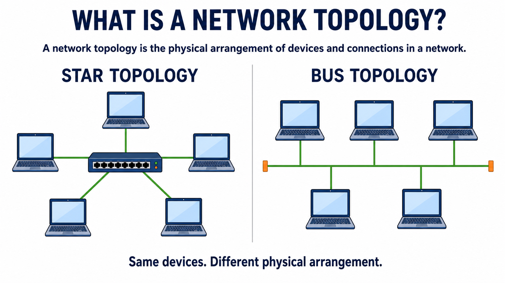
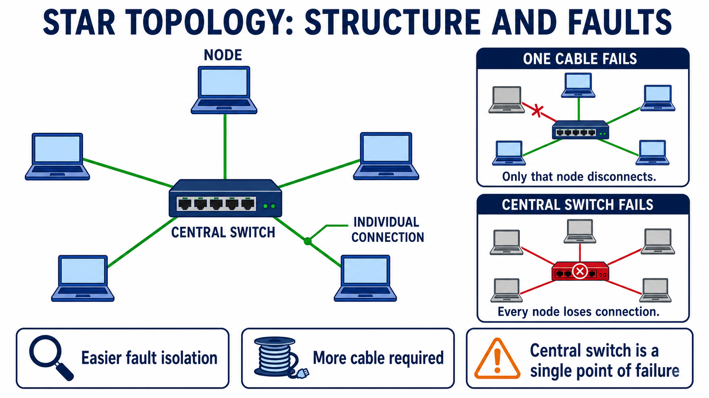
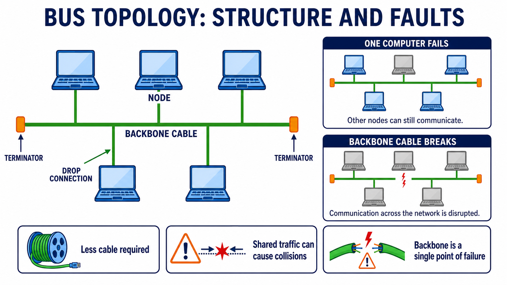
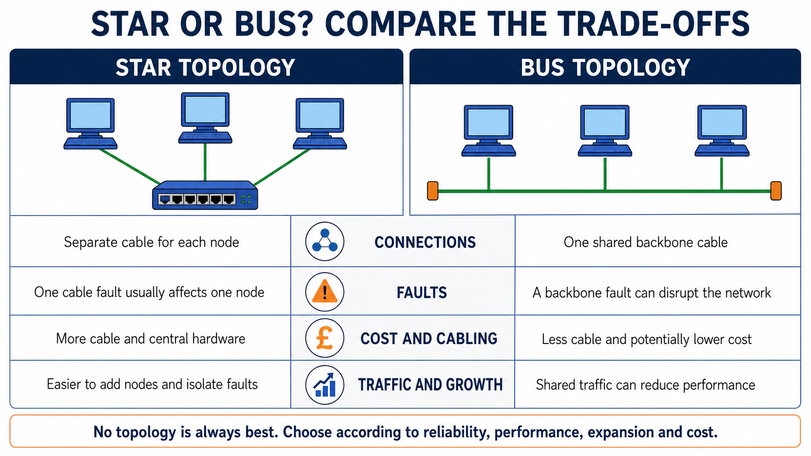
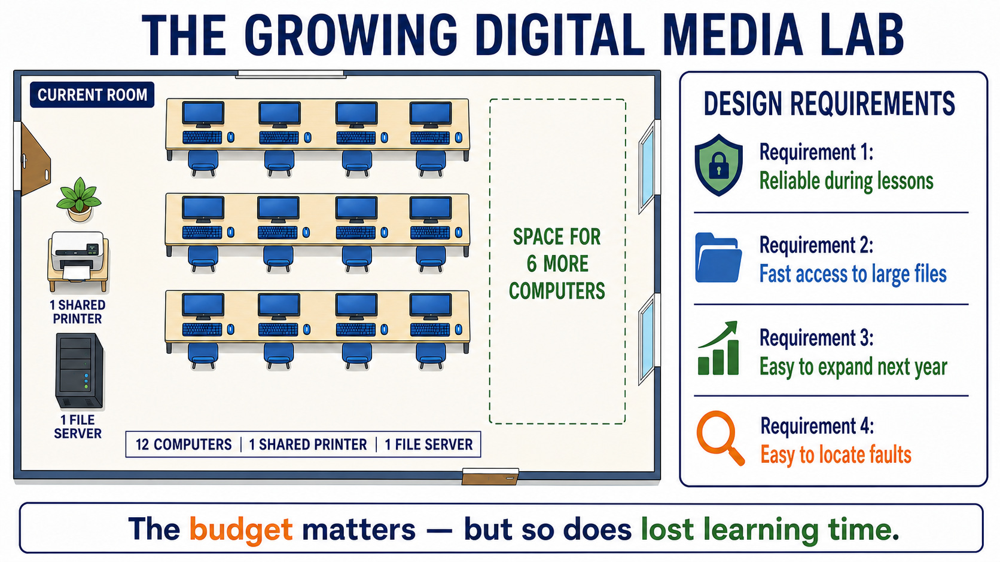
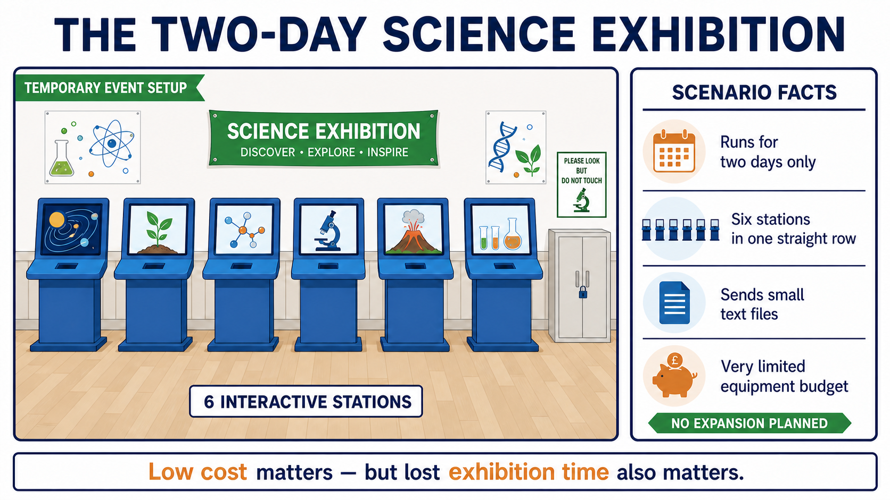

Knowledge
Know the defining structure, equipment, benefits and limitations of star and bus topologies.
YEAR 11 · TERM 1 · WEEK 3 · SESSION 1
Learn to draw, explain and apply star and bus physical network topologies.
Your work is saved only in this browser. Nothing is uploaded by this website.
00 · LESSON OVERVIEW
A network topology is not just a picture. Its physical connections affect cost, performance, expansion and what happens when something fails.
Explaining and comparing star and bus topologies, then applying their trade-offs to a network scenario.
Know the defining structure, equipment, benefits and limitations of star and bus topologies.
Draw and label accurate topology diagrams, identify fault effects and construct linked explanations.
Understand that requirements determine suitability; no topology is universally best.
BY THE END
Recall prerequisite network knowledge.
Read, inspect and reconstruct.
Classify properties and draw.
Model, then justify independently.
Retrieve the defining ideas.
TEACHER REVIEW
Answer keys, exemplars and review notes are visible. Use the navigation to inspect any part of the lesson.
01 · DO NOW · 6 MINUTES · 5 MARKS
Work from memory. Write an answer for every question before checking.
[1 mark]
Local Area Network.
[1 mark]
Covers a relatively small geographical area; normally owned and managed by one person or organisation.
[1 mark]
A switch.
[1 mark]
Pulses of light.
[1 mark]
Higher bandwidth; less signal loss over distance; resistant to electrical interference.
02 · LEARN · 10 MINUTES
Read the short explanations beside the diagrams. The image supports the idea; your explanation proves the learning.

The physical topology describes how network nodes and communication links are arranged. Two rooms can contain the same computers but behave differently if their physical connections are arranged differently.

READING A · STAR
Every node has its own connection to a central switch. Communication passes through the switch, which forwards data towards its intended destination.

READING B · BUS
Every node connects to one shared main cable called the bus or backbone. A terminator at each end absorbs signals and prevents unwanted reflections.
OxfordAQA International GCSE Computer Science textbook, printed pages 230–231. Physical bus networks have limited modern use; we study them because they remain part of specification section 3.5.
03 · MAIN ACTIVITY 1 · 15 MINUTES
First classify the structural and fault statements. Then draw both topologies without tracing the image.

Use the criteria, not the colour or shape, to decide which property belongs to which topology.
PART A · 6 MARKS
PART B · DIAGRAM SKILL
04 · MAIN ACTIVITY 2 · 17 MINUTES
Study one expert example, then apply the same reasoning process independently to a contrasting situation.
MODELLED EXAMPLE

The room needs reliable lessons, fast file access, easy expansion and fault finding.
A star gives every node a separate link to a central switch.
A link fault normally isolates one computer, and another node can be added to an available switch port.
Star is more suitable because reliability and expansion are important.
It requires more cabling and central hardware, increasing cost.
Expert response: The media lab expects six additional computers and needs to remain available during lessons. In a star topology, every node has a separate connection to a central switch, so a single link failure normally affects only one computer and new nodes can be added using available switch ports. Star is therefore the more suitable choice for reliability and expansion, although it requires more cabling and central hardware.
INDEPENDENT APPLICATION

Context note: This is a simplified comparison scenario. Modern school LANs usually use star topology; physical bus networks now have limited application.
A supported decision matters more than selecting a topology without explanation.
Bus can be justified: The exhibition is temporary, has only six stations in a straight row and sends small files. A bus uses one shared backbone, so it requires less cabling and can reduce initial equipment cost. The limited traffic means reduced performance may be acceptable. However, a backbone fault could disconnect every station.
Star can also be justified: If avoiding lost exhibition time is the highest priority, separate links make faults easier to isolate and one link failure normally affects only one station. This reliability must be weighed against the extra cable and switch cost.
05 · EXTENSION · OPTIONAL · 6 MARKS
No sentence frame this time. Build a precise response using evidence, consequence and a balanced judgement.
E-SPORTS CHAMPIONSHIP
A school is creating a permanent network for 20 gaming computers. The computers exchange large amounts of data during matches. A fault in one computer connection should not stop the other matches. Technicians must be able to locate faults quickly, and the school may add more computers next year.
[6 marks]
A strong response would normally recommend star and build linked explanations from the scenario.
06 · PLENARY · 5 MINUTES · 3 MARKS
Close the learning materials. Answer from memory, then repair anything missing.
[1 mark]
Star gives each node a separate connection to a central switch; bus connects every node to one shared backbone.
[1 mark]
They absorb signals and prevent unwanted reflections or interference.
[1 mark]
Star topology; the nodes lose network communication because all connections depend on the switch.
07 · EVIDENCE REPORT
Your report contains your responses, self-marking, diagrams and improvements. Review it before saving as PDF.
Local saving: this website stores progress only on this device and browser.